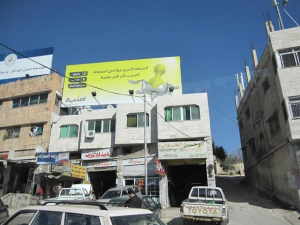
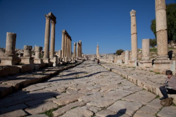

Jordan Scenes
- March 3rd, 2009
- Posted in Chron
- Write comment
I am catching up with some scenes from Jordan.
We tried to cross into Jordan at the Allenby Bridge. There was some unstated security problem, which could take hours to clear up. We drove 1 1/2 hours to the crossing near Beit She’an. Our Israeli bus took us to the Israeli crossing. Then we walked across a sort of no-man’s land to the Jordanian side. Formalities on the Jordan side were lightweight and tolerably efficient, including xraying all luggage and walking through a metal detector. Then, we boarded our Jordan tour bus.
Our first stop was the Roman ruins at Jerash. My eyes sort of glaze over at all of the columns, hippodromes, and coliseums and I am a bit murky on the history. Jerash was one of the cit1es of the Decapolis—the 10 great Roman cities of the eastern Mediterranean. Very few Roman sites are as intact or as well restored as Pompeii in Italy. Still it is impressive to see the remains of structures from the 1st century CE. The re-use of materials and the layering of additional later cultures is interesting in this area. After the Romans, we get the Byzantines—essentially Greek Christians. Roman temples are turned into churches. Part way through Byzantium we get the Iconoclasts who did not tolerate any imagery from pagan Rome nor any representation of G-d, man, or animals. So, mosaics and statues are defaced. Next come the Persians followed by the Umayyad Muslims of the 8th century followed by the Mamluks from Egypt, followed by the Crusaders, followed by the Ottomans.
From Jerash, we drove to Amman, which we could only see by night. See Jordan Impressions.
Continue to the photos:
| A highway photo of King Abdullah II in his Bedouin attire. He dresses better than most other Bedouin. There are even more public photos of his illustrious father, King Hussein. | |
| A shopping street in a Jordanian village. | |
|  | Jordanian advertising. |
| Entrance gate to Jerash added to celebrate a visit by Emperor Hadrian in approximately 130 CE. They built this from materials scavenged from other structures: the columns are upside down and the capitals of the columns don’t match. | |
| Original Roman entrance to the town where 20,000 to 30,000 people may have lived using an estimate of 7x the seating capacity of the town’s coliseum. | |
|  | The cado, or main north-south street of the town |
| Detail of column capital and cross beams | |
| Amman by night | |
| Interior of very nice Jordanian restaurant in a nice suburb of Amman. Jordanians here looked like upper middle class people anywhere in the world. Only one woman we saw wore a hijab. | |
| This gentleman plays the lute beautifully and sings those nasally droning sort of Arabic songs that quickly become very haunting. |
{kind=link}
{kind=link}
{kind=link}
{kind=link}
{kind=link}
{kind=link}
{kind=link}
{kind=link}
{kind=link}
{kind=link}
No comments yet.